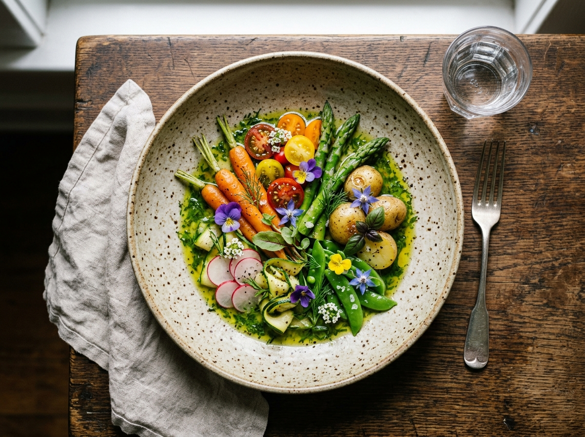
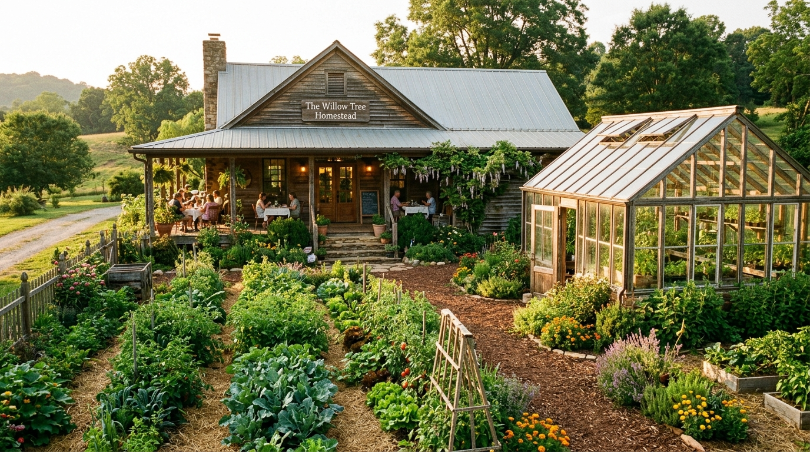
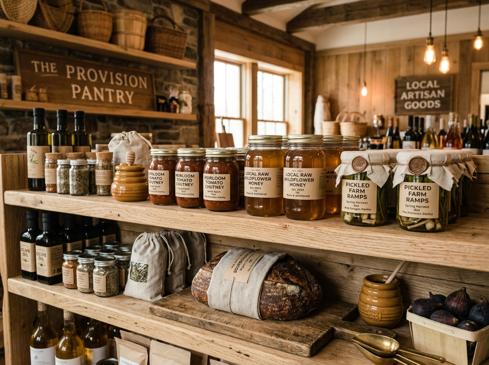

An edible ecosystem where culinary creativity directly follows the rhythm of our 2.4-acre permaculture farm and solar greenhouse.
Founded within a historic 1942 homestead on Poinsett Highway, 101 Café and Farm unites culinary innovation with regenerative agriculture. Every morning, our chefs and agronomists step into the gardens to harvest native heirloom vegetables, edible blooms, and wild herbs before composing the day’s table.


When we restored this 1942 homestead on Poinsett Highway, our vision was simple yet radical: eradicate the supply chain between soil and fork.
Today, our grounds flourish with perennial fruit trees, raised garden beds, active beehives, composting sanctuaries, and our signature solar greenhouse where seedlings and rare microgreens thrive year-round.
Companion planting, rainwater catchment, and natural pest predation without synthetic sprays.
House vinegars, miso, garums, and preserves transforming surpluses into deep culinary flavor.

Homestead Honey100% unfiltered raw honey harvested straight from our farm apiary hives. Rich amber floral notes.
Slow-simmered farm tomatoes, roasted ginger, warm spices, and apple cider vinegar. Perfect with cheeses.
Wild-foraged spring alliums pickled in seasoned brine with mustard seeds and black peppercorns.
36-hour slow fermented country loaf crafted with stone-ground heritage grains and natural farm yeast.
“101 Café is one of the most ambitious and honest culinary endeavors in the American South—a living testament to how soil stewardship elevates fine dining.”
Whether an intimate dinner inside the restored 1942 home or a breezy Sunday brunch beneath the pergola vines.
We accept reservations up to 30 days in advance. Walk-ins are always welcomed in our casual greenhouse bar and garden patio.
Located along the historic Poinsett corridor, just 10 minutes north of downtown Greenville.
| Monday & Tuesday | Closed (Harvest & Farm Maintenance) |
| Wednesday – Friday | 11:00 AM – 9:00 PM |
| Saturday | 9:00 AM – 9:00 PM (Brunch & Dinner) |
| Sunday | 9:00 AM – 3:00 PM (Farm Brunch) |
Inquire regarding private farm gatherings, greenhouse weddings, or culinary questions.